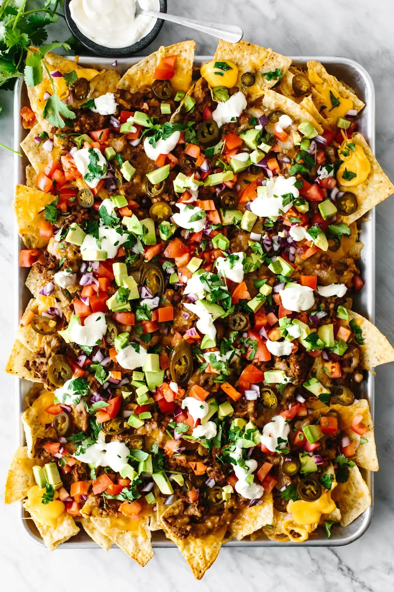

Nachos

Delicious Mexican Nachos
These authentic mexican nachos will have you and your guests' mouths watering from the first bite. With
salty tortilla chips, a mellow queso, and many more delicious toppings, you will be the neiborhood's go-to for
every Sunday's football game.
Ingredients:
- Ground Beef
- Taco Seasoning
- Beans
- Tortilla Chips
- Melted Cheese
- Pickled Jalapenos
- Fresh Toppings
Steps
- Preheat oven to 400 Fahrenheit.
- Cook the beef. Add the ground beef to a skillet over medium heat and cook for about 5 minutes.
Then add the taco seasoning and cook for 5 extra minutes until it is browned.
- Cook the refried beans. Add the refried beans and water to the skillet and stir everything
until combined.
- Layer on a sheet pan. First, spread out the tortillas on a rimmed sheet pan, and layer on the ground beef mixture,
cheese, and jalapenos.
Bake for 10 to 15 minutes, until the cheese is melted and the edges of the tortilla chips are golden.
- Add the toppings. Immediately add the diced tomatoes, onion, avocado, sour cream, and cilantro.
Your nachos recipe is ready to serve!